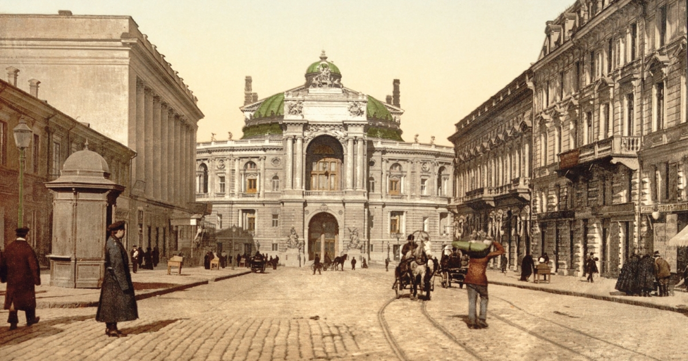
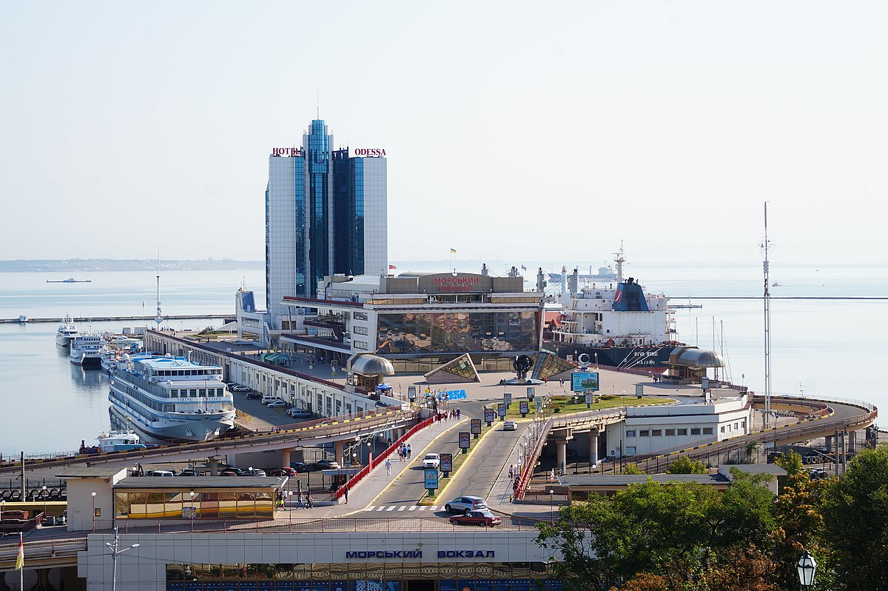
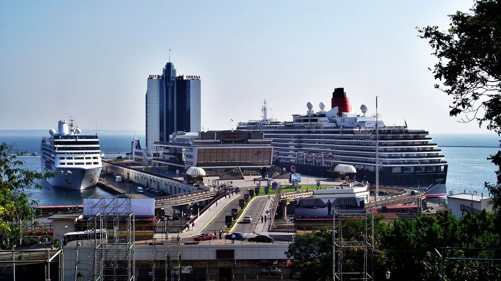
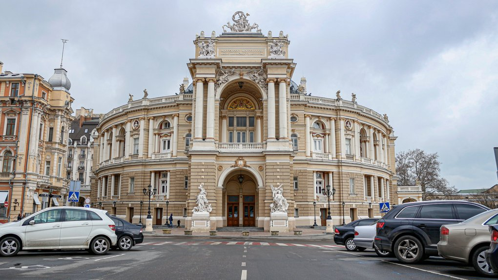
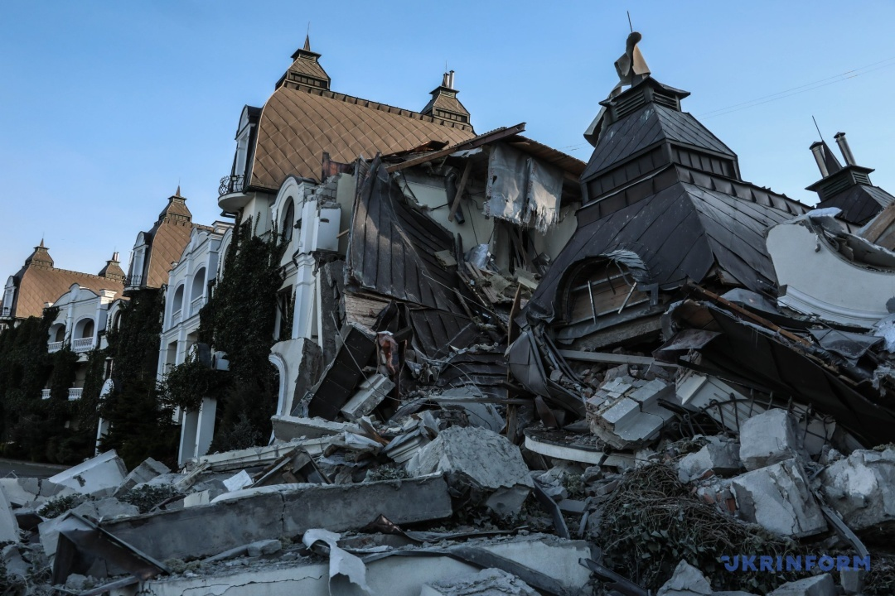
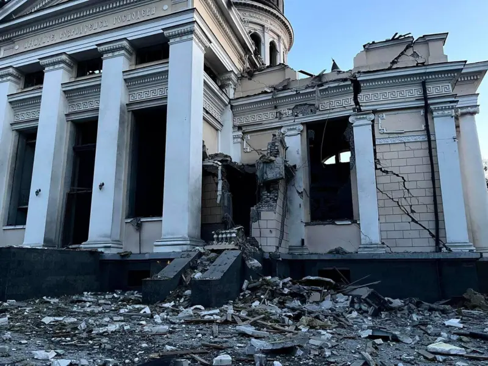
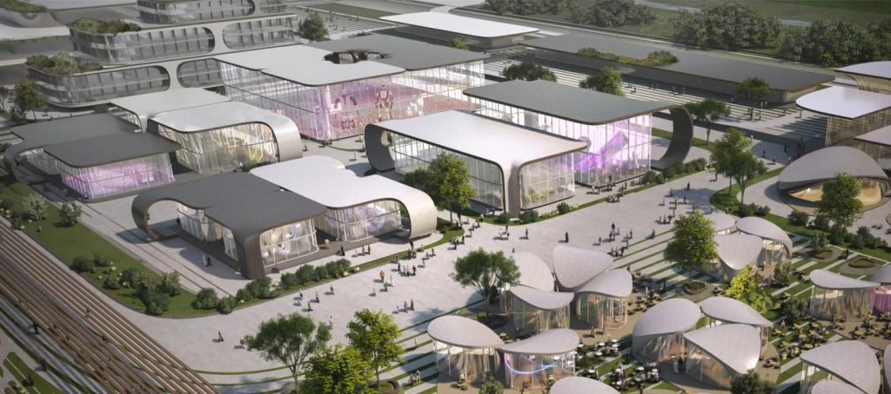
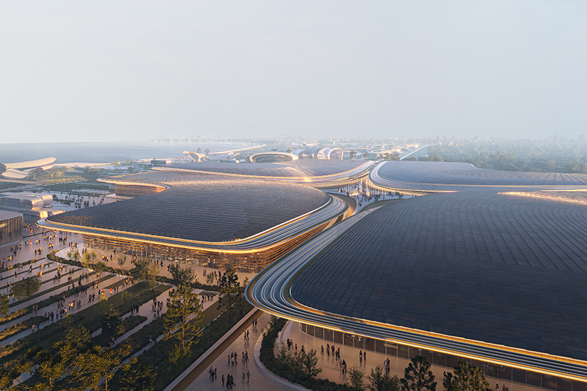
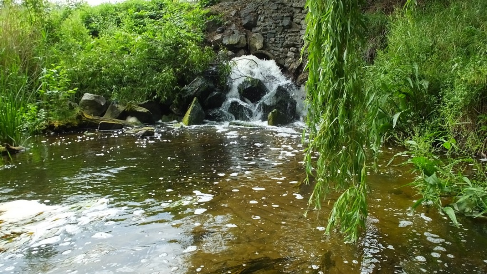
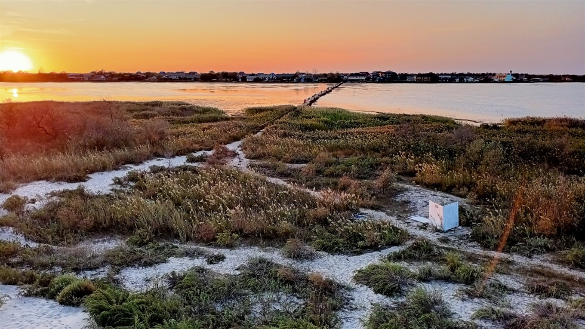

Миколаїв засновано у 1789 році, а в 1790-му він отримав статус міста. Його розвиток пов'язаний із суднобудуванням, яке стало основною галуззю. Місто назвали на честь святого Миколая, покровителя мореплавців. Миколаїв був центром кораблебудування на Чорному морі в XIX столітті. У 1862 році було відкрито комерційний порт, що сприяло його перетворенню на великий торговельний і промисловий центр. Місто завжди було тісно пов'язане з флотом, тут будували кораблі, зокрема важкі авіаносці, і дислокувався штаб Чорноморського флоту.
24 березня 2022 року Миколаїв отримав звання «Місто-герой України» за масовий героїзм і стійкість мешканців під час оборони міста від російської агресії.
Миколаїв, Стрийсього району Львівської області, фото початку XX століття
РОЛЬ
Роль
Миколаїв, спочатку розвивався як центр суднобудування на Чорному морі, ставши важливим осередком для будівництва військових кораблів. Місто, назване на честь святого Миколая, покровителя моряків, із XIX століття також стало великим торговим портом, що перетворило його на важливий економічний і промисловий центр, тісно пов'язаний з експортом зерна.
Сьогодні Миколаїв залишається ключовим аграрно-промисловим центром і символом українського спротиву, зберігаючи при цьому багату культурну та архітектурну спадщину.
Початковий період Миколаївського суднобудування – діорама в Музеї суднобудування та флоту
СПАДЩИНА
Спадщина
Миколаївська обсерваторія — одна з найдавніших обсерваторій Східної Європи, заснована у 1821 році як морська обсерваторія. У 1912 році вона стала частиною Головної (Пулковської) астрономічної обсерваторії, а з 1935 року увійшла до мережі наукових установ Академії наук СРСР. У 1992 році обсерваторія отримала статус незалежної наукової установи України, а з 2002 року функціонує як Науково-дослідний інститут «Миколаївська астрономічна обсерваторія». Нині вона перебуває під управлінням Державного комітету України з питань науки, інновацій та інформатизації.
У 2007 році Миколаївська обсерваторія була включена до об'єктів Всесвітньої спадщини ЮНЕСКО від України, що підкреслює її історичний та науковий статус як однієї з найважливіших обсерваторій Східної Європи.
Миколаївська астрономічна обсерваторія
ВІЙНА
Війна
У перші дні війни російські війська почали атаки на об'єкти в околицях Миколаєва. Агресор намагався висадити десант з гелікоптерів, використовував диверсійно-розвідувальні групи, а також завдавав ударів по військових і цивільних об'єктах ракетами. Місто піддалося артилерійським обстрілам, а танки намагалися прорватися на його територію. За даними обласної військової адміністрації, внаслідок цих атак сотні людей були вбиті або поранені. Російські війська пошкодили або знищили 1304 житлових об'єкти, 12 медичних закладів, 79 навчальних закладів, 24 культурні установи, 17 промислових об'єктів, 74 об'єкти газопостачання, 164 електричних об'єктів, 6 теплопостачальних об'єктів та 69 інших невійськових структур.
Попри всі зусилля агресора, місто не було захоплене. Зазнавши значних втрат у особовому складі та техніці, російські війська відступили.
Зруйнована внаслідок російської агресії перша українська гімназія імені Миколи Аркаса
МАЙБУТНЄ
Майбутнє
При розробці цього плану фахівці зосередились на збереженні історичних будівель на території заводу, а також реконструкції існуючих споруд та створенні зелених просторів. "Ми намагалися з усіх сторін подивитись на майбутнє старішого суднобудівного заводу нашого міста, зберегти суднобудування і закласти його розвиток з урахуванням світових тенденцій в цій сфері, що спираються на високотехнологічне виробництво і створення кластерів", — додав керівник експертної групи Ігор Лисицький.
У проєкті передбачені майданчики для малого суднобудування, стоянка катерів і яхт, комплекс технологічного парку, музей кораблів просто неба, офісні та житлові будинки. Крім того, у планах театр і канатна дорога, що з’єднає обидва береги річки, додали в повідомленні.
Концепція ревіталізації Миколаївського суднобудівного заводу
ПРИРОДА
Природа
Мигія — одна з найпривабливіших частин парку "Гранітно-Степове Побужжя", відома своїми мальовничими пейзажами. Це селище щороку приваблює все більше туристів. Для любителів активного відпочинку пропонується рафтинг — екстремальний спорт, який включає сплав гірською або рівнинною річкою на плотах, тюбах чи надувних човнах. Мандрівники можуть вибирати між маршрутами з елементами боротьби з водною стихією та зонами для релаксу. Охочі можуть спробувати бодірафтинг у бурхливих водах або підкорити скелі, як, наприклад, в урочищі Протич.
Однак рафтинг — це активний і небезпечний вид відпочинку, тому важливо уважно слухати інструкторів і перевіряти екіпірування. Це ідеальний вибір для тих, хто прагне гострих відчуттів та активного відпочинку.
Мальовничі краєвиди Української Швейцарії
РОЛЬ
Роль
Миколаїв, спочатку розвивався як центр суднобудування на Чорному морі, ставши важливим осередком для будівництва військових кораблів. Місто, назване на честь святого Миколая, покровителя моряків, із XIX століття також стало великим торговим портом, що перетворило його на важливий економічний і промисловий центр, тісно пов'язаний з експортом зерна.
Сьогодні Миколаїв залишається ключовим аграрно-промисловим центром і символом українського спротиву, зберігаючи при цьому багату культурну та архітектурну спадщину.
Початковий період Миколаївського суднобудування – діорама в Музеї суднобудування та флоту
МАЙБУТНЄ
Майбутнє
При розробці цього плану фахівці зосередились на збереженні історичних будівель на території заводу, а також реконструкції існуючих споруд та створенні зелених просторів. "Ми намагалися з усіх сторін подивитись на майбутнє старішого суднобудівного заводу нашого міста, зберегти суднобудування і закласти його розвиток з урахуванням світових тенденцій в цій сфері, що спираються на високотехнологічне виробництво і створення кластерів", — додав керівник експертної групи Ігор Лисицький.
У проєкті передбачені майданчики для малого суднобудування, стоянка катерів і яхт, комплекс технологічного парку, музей кораблів просто неба, офісні та житлові будинки. Крім того, у планах театр і канатна дорога, що з’єднає обидва береги річки, додали в повідомленні.
Концепція ревіталізації Миколаївського суднобудівного заводу
Одеса була заснована в 1794 році на місці турецької фортеці Хаджибей, що надало стратегічні переваги для створення морського порту на Чорному морі. Місто швидко розвивалося завдяки вигідному розташуванню і стало важливим торговим та культурним центром. Одеса приваблювала представників різних національностей, що сприяло формуванню її багатокультурного колориту та унікальної архітектури.
Одеса завжди була містом, де зустрічалися культури, традиції та люди з різних куточків світу, створюючи неповторний колорит.

Історична Одеса, фото початку XX століття

РОЛЬ
Роль
З самого початку Одеса відігравала важливу роль як центр морської торгівлі, забезпечуючи експорт зерна і товарів із сільськогосподарських регіонів України. У XIX столітті порт Одеси був одним із найбільших на Чорному морі, що забезпечувало економічне і культурне зростання міста. Сьогодні Одеса залишається ключовим портовим і туристичним центром, що зберігає культурне багатство та сприяє розвитку економіки.
Одеса продовжує відігравати важливу роль у житті України, залишаючись великим центром торгівлі та туризму.

Порт Одеси – один із найбільших на Чорному морі, важливий центр морської торгівлі

СПАДЩИНА
Спадщина
Одеса славиться архітектурною і культурною спадщиною. Серед найбільш відомих пам’яток – Потьомкінські сходи, Одеський оперний театр і численні старовинні будівлі історичного центру міста. Її унікальна архітектура відображає європейські впливи і поєднує різні стилі, що робить Одесу культурною перлиною України. У 2009 році історичний центр Одеси був номінований на включення до списку Світової спадщини ЮНЕСКО.
Культурна спадщина Одеси є втіленням історії та багатонаціонального минулого міста.
Потьомкінські сходи – символ Одеси, що відображає її архітектурну спадщину

ВІЙНА
Війна
Під час російсько-української війни Одеса залишається важливим стратегічним містом, яке стикається з новими викликами. Сьогодні вона є символом незламності, захищаючи свої кордони та зберігаючи свою культурну і національну ідентичність, попри труднощі та загрози.
Одеса залишається символом стійкості під час російсько-української війни, демонструючи єдність та підтримку Збройних Сил.

Пошкоджений внаслідок ракетного обстрілу російськими військами Одеський Преображенський кафедральний собор

МАЙБУТНЄ
Майбутнє
Одеса продовжує розвиватися як сучасний порт і туристичний центр, де планується подальша модернізація інфраструктури та збереження історичних і культурних пам’яток. Влада міста працює над розширенням туристичних об'єктів, створенням нових зелених зон для відпочинку та збереженням екологічного балансу. Одеса прагне залишатися привабливим містом для життя та туризму, поєднуючи історичну спадщину та сучасні технології.
Майбутнє Одеси – це розвиток, збереження культурного надбання та сучасні можливості для її мешканців і туристів.

Проєкт забудови Одеси для виставки Експо-2030

ПРИРОДА
Природа
Одеська область відома своїм мальовничим узбережжям Чорного моря і численними природними пам’ятками. Одне з популярних місць – національний парк «Тузлівські лимани», де можна насолоджуватися красою дикої природи. Чорноморське узбережжя привертає туристів своїми пляжами, морськими видами і можливостями для відпочинку на свіжому повітрі, роблячи Одесу ідеальним місцем для поєднання активного та релаксаційного відпочинку.
Природне багатство Одеси робить її унікальним місцем для відпочинку та екотуризму.

Національний парк «Тузлівські лимани» – мальовниче місце для любителів природи та екотуризму
РОЛЬ
Роль
З самого початку Одеса відігравала важливу роль як центр морської торгівлі, забезпечуючи експорт зерна і товарів із сільськогосподарських регіонів України. У XIX столітті порт Одеси був одним із найбільших на Чорному морі, що забезпечувало економічне і культурне зростання міста. Сьогодні Одеса залишається ключовим портовим і туристичним центром, що зберігає культурне багатство та сприяє розвитку економіки.
Одеса продовжує відігравати важливу роль у житті України, залишаючись великим центром торгівлі та туризму.
Порт Одеси – один із найбільших на Чорному морі, важливий центр морської торгівлі
МАЙБУТНЄ
Майбутнє
Одеса продовжує розвиватися як сучасний порт і туристичний центр, де планується подальша модернізація інфраструктури та збереження історичних і культурних пам’яток. Влада міста працює над розширенням туристичних об'єктів, створенням нових зелених зон для відпочинку та збереженням екологічного балансу. Одеса прагне залишатися привабливим містом для життя та туризму, поєднуючи історичну спадщину та сучасні технології.
Майбутнє Одеси – це розвиток, збереження культурного надбання та сучасні можливості для її мешканців і туристів.
Проєкт забудови Одеси для виставки Експо-2030
НОВІ ГОРИЗОНТИ
· · · · · РОЗВИТОК МОГО МІСТА · · · · ·
ІСТОРІЯ
Історія
Миколаїв засновано у 1789 році, а в 1790-му він отримав статус міста.
Його розвиток пов'язаний із суднобудуванням, яке стало основною галуззю.
Місто назвали на честь святого Миколая, покровителя мореплавців.
Миколаїв був центром кораблебудування на Чорному морі в XIX столітті.
У 1862 році було відкрито комерційний порт, що сприяло його перетворенню на великий торговельний і промисловий центр.
Місто завжди було тісно пов'язане з флотом, тут будували кораблі, зокрема важкі авіаносці, і дислокувався штаб Чорноморського флоту.
24 березня 2022 року Миколаїв отримав звання «Місто-герой України» за масовий героїзм і стійкість мешканців під час оборони міста від російської агресії.
Миколаїв, Стрийсього району Львівської області, фото початку XX століття
РОЛЬ
Роль
Миколаїв, спочатку розвивався як центр суднобудування на Чорному морі,
ставши важливим осередком для будівництва військових кораблів.
Місто, назване на честь святого Миколая, покровителя моряків,
із XIX століття також стало великим торговим портом, що перетворило його на важливий економічний і промисловий центр,
тісно пов'язаний з експортом зерна.
Сьогодні Миколаїв залишається ключовим аграрно-промисловим центром і символом українського спротиву,
зберігаючи при цьому багату культурну та архітектурну спадщину.
Початковий період Миколаївського суднобудування – діорама в Музеї суднобудування та флоту
СПАДЩИНА
Спадщина
Миколаївська обсерваторія — одна з найдавніших обсерваторій Східної Європи,
заснована у 1821 році як морська обсерваторія.
У 1912 році вона стала частиною Головної (Пулковської) астрономічної обсерваторії,
а з 1935 року увійшла до мережі наукових установ Академії наук СРСР.
У 1992 році обсерваторія отримала статус незалежної наукової установи України,
а з 2002 року функціонує як Науково-дослідний інститут «Миколаївська астрономічна обсерваторія».
Нині вона перебуває під управлінням Державного комітету України з питань науки, інновацій та інформатизації.
У 2007 році Миколаївська обсерваторія була включена до об'єктів Всесвітньої спадщини ЮНЕСКО від України,
що підкреслює її історичний та науковий статус як однієї з найважливіших обсерваторій Східної Європи.
Миколаївська астрономічна обсерваторія
ВІЙНА
Війна
У перші дні війни російські війська почали атаки на об'єкти в околицях Миколаєва.
Агресор намагався висадити десант з гелікоптерів, використовував диверсійно-розвідувальні групи,
а також завдавав ударів по військових і цивільних об'єктах ракетами.
Місто піддалося артилерійським обстрілам, а танки намагалися прорватися на його територію.
За даними обласної військової адміністрації, внаслідок цих атак сотні людей були вбиті або поранені.
Російські війська пошкодили або знищили 1304 житлових об'єкти, 12 медичних закладів, 79 навчальних закладів,
24 культурні установи, 17 промислових об'єктів, 74 об'єкти газопостачання, 164 електричних об'єктів,
6 теплопостачальних об'єктів та 69 інших невійськових структур.
Попри всі зусилля агресора, місто не було захоплене. Зазнавши значних втрат у особовому складі та техніці, російські війська відступили.
Зруйнована внаслідок російської агресії перша українська гімназія імені Миколи Аркаса
МАЙБУТНЄ
Майбутнє
При розробці цього плану фахівці зосередились на збереженні історичних будівель на території заводу,
а також реконструкції існуючих споруд та створенні зелених просторів.
"Ми намагалися з усіх сторін подивитись на майбутнє старішого суднобудівного заводу нашого міста,
зберегти суднобудування і закласти його розвиток з урахуванням світових тенденцій в цій сфері,
що спираються на високотехнологічне виробництво і створення кластерів",
— додав керівник експертної групи Ігор Лисицький.
У проєкті передбачені майданчики для малого суднобудування, стоянка катерів і яхт,
комплекс технологічного парку, музей кораблів просто неба, офісні та житлові будинки.
Крім того, у планах театр і канатна дорога, що з’єднає обидва береги річки, додали в повідомленні.
Концепція ревіталізації Миколаївського суднобудівного заводу
ПРИРОДА
Природа
Мигія — одна з найпривабливіших частин парку "Гранітно-Степове Побужжя",
відома своїми мальовничими пейзажами. Це селище щороку приваблює все більше туристів.
Для любителів активного відпочинку пропонується рафтинг — екстремальний спорт,
який включає сплав гірською або рівнинною річкою на плотах, тюбах чи надувних човнах.
Мандрівники можуть вибирати між маршрутами з елементами боротьби з водною стихією та зонами для релаксу.
Охочі можуть спробувати бодірафтинг у бурхливих водах або підкорити скелі, як, наприклад, в урочищі Протич.
Однак рафтинг — це активний і небезпечний вид відпочинку,
тому важливо уважно слухати інструкторів і перевіряти екіпірування.
Це ідеальний вибір для тих, хто прагне гострих відчуттів та активного відпочинку.
Мальовничі краєвиди Української Швейцарії
РОЛЬ
Роль
Миколаїв, спочатку розвивався як центр суднобудування на Чорному морі,
ставши важливим осередком для будівництва військових кораблів.
Місто, назване на честь святого Миколая, покровителя моряків,
із XIX століття також стало великим торговим портом, що перетворило його на важливий економічний і промисловий центр,
тісно пов'язаний з експортом зерна.
Сьогодні Миколаїв залишається ключовим аграрно-промисловим центром і символом українського спротиву,
зберігаючи при цьому багату культурну та архітектурну спадщину.
Початковий період Миколаївського суднобудування – діорама в Музеї суднобудування та флоту
МАЙБУТНЄ
Майбутнє
При розробці цього плану фахівці зосередились на збереженні історичних будівель на території заводу,
а також реконструкції існуючих споруд та створенні зелених просторів.
"Ми намагалися з усіх сторін подивитись на майбутнє старішого суднобудівного заводу нашого міста,
зберегти суднобудування і закласти його розвиток з урахуванням світових тенденцій в цій сфері,
що спираються на високотехнологічне виробництво і створення кластерів",
— додав керівник експертної групи Ігор Лисицький.
У проєкті передбачені майданчики для малого суднобудування, стоянка катерів і яхт,
комплекс технологічного парку, музей кораблів просто неба, офісні та житлові будинки.
Крім того, у планах театр і канатна дорога, що з’єднає обидва береги річки, додали в повідомленні.
Концепція ревіталізації Миколаївського суднобудівного заводу